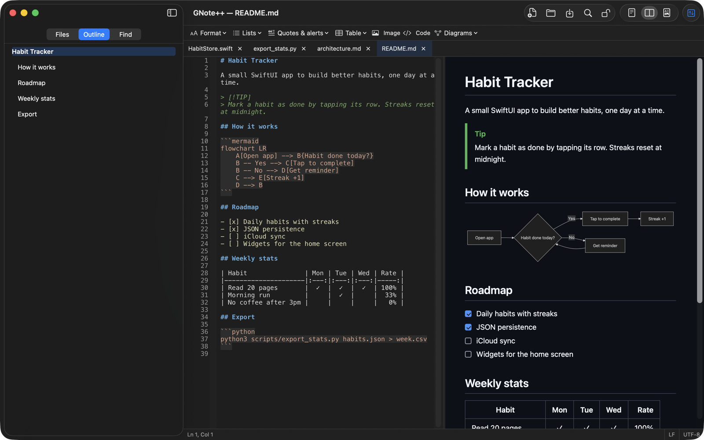
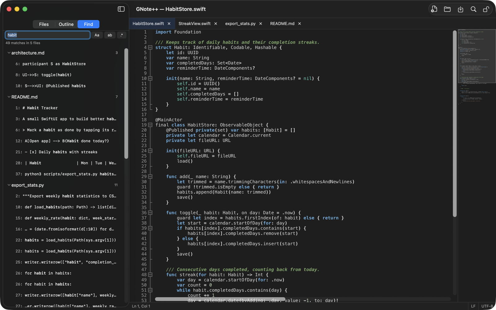

What it does
Code
- Syntax highlighting for every language Notepad++ supports, with its themes in light and dark mode.
- Multi-cursor and column editing, autocompletion, brace and tag matching.
- Bookmarks, code folding, change history and a minimap.
- Function list for the open file.
Markdown
- Live preview with GitHub Flavored Markdown: tables, task lists, alerts.
- Mermaid diagrams, exportable as PNG or SVG.
- Formatting toolbar, table formatting, pasted images, outline.
- Print and export to PDF.
Files
- Tabs, file tree and find in files across a folder.
- Find and replace with regular expressions.
- Encoding and line endings detected and kept on save.
- Reloads files changed on disk; restores your session.
- Per-document edit lock and spell checker (English, Spanish).


Questions
- Is there a Notepad++ for Mac?
- Notepad++ itself only runs on Windows. GNote++ brings its editing engine, language definitions and color themes to macOS as a native app.
- Is it free?
- Yes. Free and open source under the GPL-3.0 license.
- Which Macs does it run on?
- Macs with Apple silicon (M1 or later) running macOS 13 Ventura or later.
- Does it use Wine or emulation?
- No. The interface is written in SwiftUI; the text engine is Scintilla, the same one Notepad++ uses.
- Is it affiliated with Notepad++?
- No. GNote++ is an independent project based on Notepad++'s open-source code and is not endorsed by it.
Build from source
GNote++ is a Swift Package Manager project. Clone the whole repository, then:
cd mac/NppMacPOC
swift build
./scripts/make_app_bundle.sh
open .build/GNote++.app